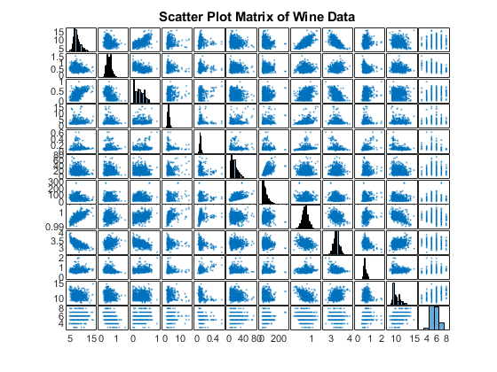
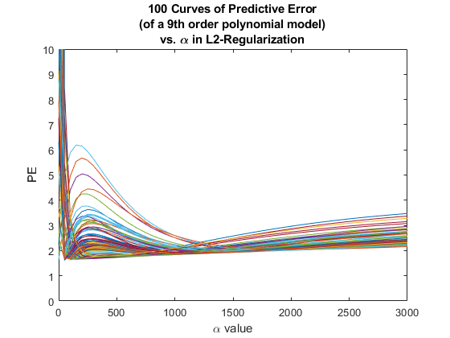
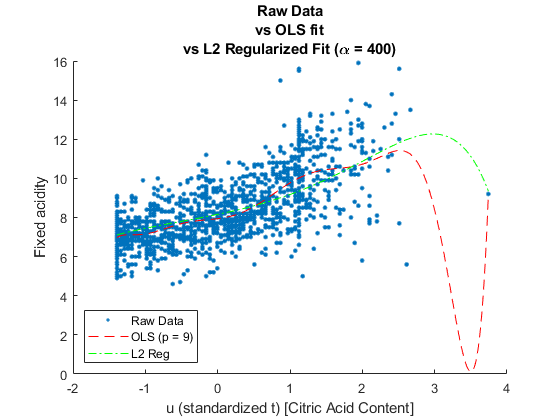

Contents
Question 2
close all, clear all, clc;
warning('off','MATLAB:table:ModifiedAndSavedVarnames')
Part 1
Importing Data
data_table_raw = readtable('winequality_red.csv');
t = data_table_raw.('citricAcid');
u = (t - mean(t))./std(t);
y = data_table_raw.('fixedAcidity');
var_names = {'t','u','y'};
data_table = sortrows(array2table([t, u, y],...
'VariableNames', var_names), 't');
data_arr = table2array(data_table);
Scatter Matrix
A = table2array(data_table_raw);
fig1 = figure(1);
plotmatrix(A);
title('Scatter Plot Matrix of Wine Data')
Part 2
100 PE Curves based on (p = 9) Poly Model w/ L2 Reg, \alpha = 0:50:3000
p = 9;
k_cv = 5;
alpha_range = 0:50:3000;
num_PE_curves = 100;
PE_arr = [alpha_range', zeros([length(alpha_range), num_PE_curves])];
for PE_curve = 1:1:num_PE_curves
binned_data_struct = bin_this_data(data_arr, k_cv);
binned_data_cell = binned_data_struct.cell;
bin_indices = 1:k_cv;
for alpha = alpha_range
alpha_ind = find(alpha_range == alpha);
MSE_5fold = zeros([k_cv, 1]);
for test_bin = 1:k_cv
train_bins = bin_indices(1:end ~= test_bin);
train_data_cell = binned_data_cell(train_bins);
train_data_arr = sortrows(cat(1, train_data_cell{:}));
test_data_arr = sortrows(cell2mat(binned_data_cell(test_bin)));
train_data_table = array2table(train_data_arr,...
'VariableNames', var_names);
test_data_table = array2table(test_data_arr,...
'VariableNames', var_names);
u_train = train_data_table.u;
y_train = train_data_table.y;
u_test = test_data_table.u;
y_test = test_data_table.y;
X = ols_coeffs_data(u_train, y_train, p).X;
X(:,1) = [];
B = ridge(y_train, X, alpha, 0);
beta_flip = flipud(B);
y_model = polyval(beta_flip, u_test);
res_sq_sum = residuals(y_test, y_model);
MSE_5fold(test_bin, 1) = res_sq_sum / length(y_test);
end
PE_arr(alpha_ind, PE_curve + 1) = mean(MSE_5fold);
end
end
Plot all PE Curves
fig2 = figure(2);
for PE_curve_id = 1:num_PE_curves
plot(PE_arr(:, 1), PE_arr(:, PE_curve_id + 1));
hold on;
end
title({'100 Curves of Predictive Error', '(of a 9th order polynomial model)', 'vs. \alpha in L2-Regularization'});
ylim([0, 10])
xlabel('\alpha value')
ylabel('PE')
hold off;
opt_alpha = 400;
char('It looks the optimal alpha is maybe ~400 ish')
Part 3
u_full = data_table.u;
y_full = data_table.y;
X_full_std = ols_coeffs_data(u_full, y_full, 9).X;
X_full_std(:,1) = [];
w_opt_alpha400 = ridge(y_full, X_full_std, opt_alpha, 0);
w_opt_alpha400_flip = flipud(w_opt_alpha400);
w_alpha0 = ridge(y_full, X_full_std, 0, 0);
w_alpha0_flip = flipud(w_alpha0);
u_linear = linspace(min(u_full), max(u_full), 1500);
y_model_opt = polyval(w_opt_alpha400_flip, u_linear);
w_ols = ols_coeffs_data(u_full, y_full, 9).beta;
w_ols_flip = flipud(w_ols);
y_model_ols = polyval(w_ols_flip, u_linear);
Part 4
fig3 = figure(3);
scatter(u_full, y_full, 100, '.')
hold on;
plot(u_linear, y_model_ols, 'r--')
plot(u_linear, y_model_opt, 'g-.')
title({'Raw Data', 'vs OLS fit', 'vs L2 Regularized Fit (\alpha = 400)'});
xlabel('u (standardized t) [Citric Acid Content]')
ylabel('Fixed acidity')
legend({'Raw Data', 'OLS (p = 9)', 'L2 Reg'}, 'location', 'southwest')
char('L2 Ridge (alpha = 0) yields OLS coeffs')
coeff_table_all = array2table([w_ols, w_alpha0, w_opt_alpha400],...
'VariableNames', {'w_ols', 'w_L2 (alpha = 0)', 'w_L2_opt (alpha = 400)'},...
'RowNames', {'p=1','p=2','p=3','p=4','p=5','p=6','p=7','p=8','p=9','p=10'})
Functions
function res_squared = residuals(y_real, y_model)
res_squared = sum(abs(y_real - y_model).^2);
end
function residuals_table = res_table(ry_polyvals_table)
max_poly_order = size(ry_polyvals_table, 2) - 2;
residuals_arr = zeros([max_poly_order, 3]);
for order_ind = 1:max_poly_order
y_real = ry_polyvals_table.y;
y_model = table2array(ry_polyvals_table(:, order_ind + 2));
residuals_arr(order_ind, 1) = order_ind;
residuals_arr(order_ind, 2) = residuals(y_real, y_model);
residuals_arr(order_ind, 3) = residuals_arr(order_ind, 2) ./ size(ry_polyvals_table, 1);
end
residuals_table = array2table(residuals_arr,...
'VariableNames',{'Polynomial_Order', 'Residual Sum', 'MSE'});
end
function ols_data = ols_coeffs_data(x, y, poly_order)
ols_data = struct();
X = zeros(length(x), poly_order + 1);
X(:, 1) = 1;
for ord_ind = 1:poly_order
X(:, ord_ind + 1) = x.^(ord_ind);
end
beta = (X' * X) \ (X' * y);
ols_data.beta = beta;
ols_data.X = X;
ols_data.res_squares_sum = norm(y - X*beta).^2;
end
function model_data_struct = poly_model_vals(data_table, max_poly_order)
model_data_struct = struct();
r = data_table.r;
r_norm = data_table.r_norm;
y = data_table.y;
n_coeffs = max_poly_order + 1;
coeffs_arr = zeros([n_coeffs, max_poly_order]);
poly_vals = zeros([length(r), max_poly_order]);
for poly_order_ind = 1:max_poly_order
beta = ols_coeffs_data(r_norm, y, poly_order_ind).beta;
poly_coeffs = flipud(beta);
for r_ind = 1:length(poly_coeffs)
coeffs_arr(r_ind, poly_order_ind) = poly_coeffs(r_ind);
end
poly_vals(:, poly_order_ind) = polyval(poly_coeffs, r_norm);
end
data_poly_vals_arr = [r, y, poly_vals];
data_var_names = {'r', 'y'};
poly_var_nums = 1:length(poly_vals(1,:));
poly_var_names = "p=" + poly_var_nums;
var_names = {[data_var_names, poly_var_names]};
data_poly_vals_table = array2table(data_poly_vals_arr,...
'VariableNames',var_names{1});
model_data_struct.coeffs_arr = coeffs_arr;
model_data_struct.ry_polyvals_arr = data_poly_vals_arr;
model_data_struct.ry_polyvals_table = data_poly_vals_table;
end
function binned_data_struct = bin_this_data(data_arr_to_bin, k_bins)
binned_data_struct = struct();
num_data_pts = size(data_arr_to_bin, 1);
rows_per_bin = floor(num_data_pts / k_bins);
extra_rows_needed = mod(num_data_pts, k_bins);
perm_ind = randperm(num_data_pts);
perm_data = data_arr_to_bin(perm_ind, :);
rowDist = rows_per_bin * ones(1, k_bins);
for extra_row = 1:extra_rows_needed
rowDist(extra_row) = rowDist(extra_row) + 1;
end
binned_data_cell = mat2cell(perm_data, rowDist)';
bin_nums = 1:k_bins;
bin_names = "bin" + bin_nums;
binned_data_table = cell2table(binned_data_cell,...
'VariableNames', bin_names);
binned_data_struct.cell = binned_data_cell;
binned_data_struct.table = binned_data_table;
end
ans =
'It looks the optimal alpha is maybe ~400 ish'
ans =
'L2 Ridge (alpha = 0) yields OLS coeffs'
coeff_table_all =
10×3 table
w_ols w_L2 (alpha = 0) w_L2_opt (alpha = 400)
________ ________________ ______________________
p=1 7.9409 7.9409 8.1601
p=2 0.46649 0.46649 0.77032
p=3 0.87997 0.87997 0.15954
p=4 1.9283 1.9283 0.095509
p=5 -0.78113 -0.78113 -0.0068747
p=6 -1.3615 -1.3615 -0.00094424
p=7 0.58475 0.58475 -0.00085789
p=8 0.25095 0.25095 -0.0001685
p=9 -0.16263 -0.16263 -4.0926e-05
p=10 0.021596 0.021596 -8.5678e-06
  